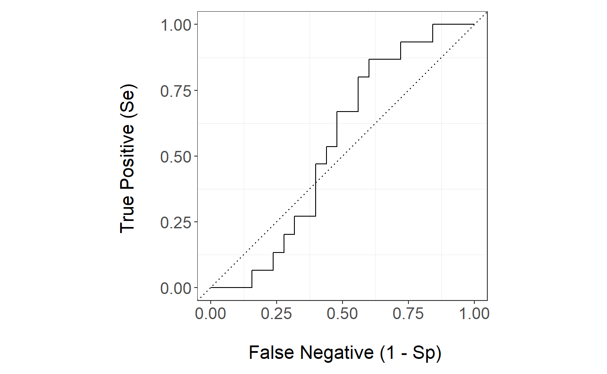
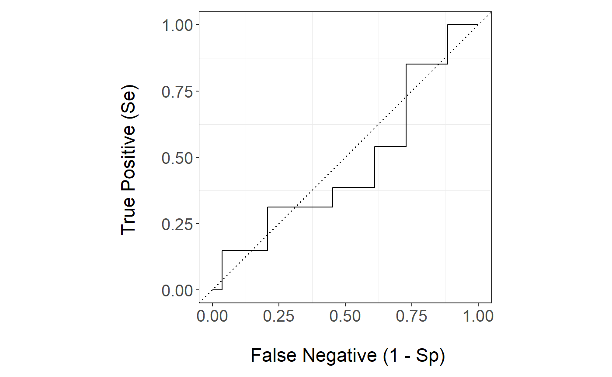
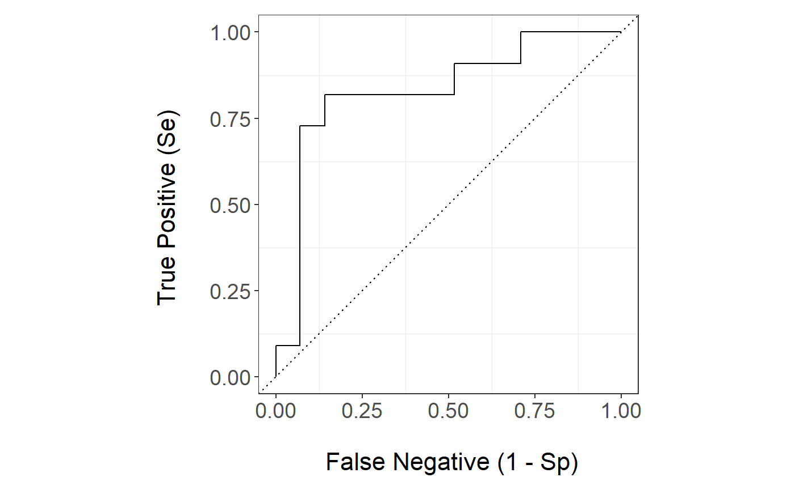
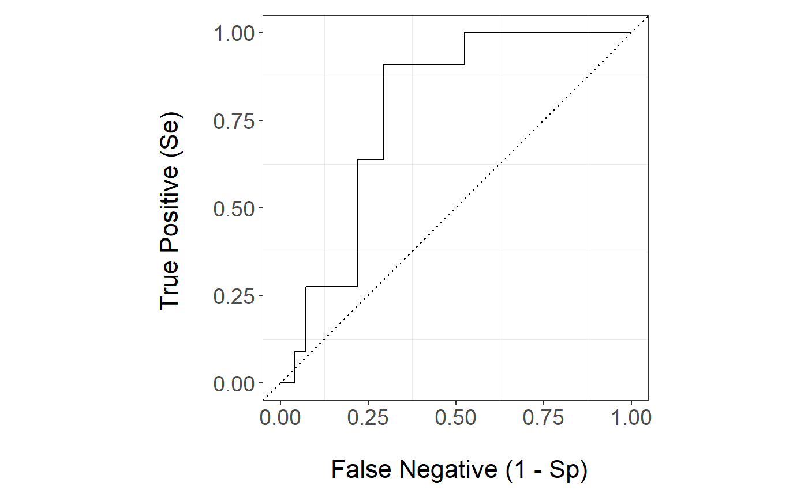
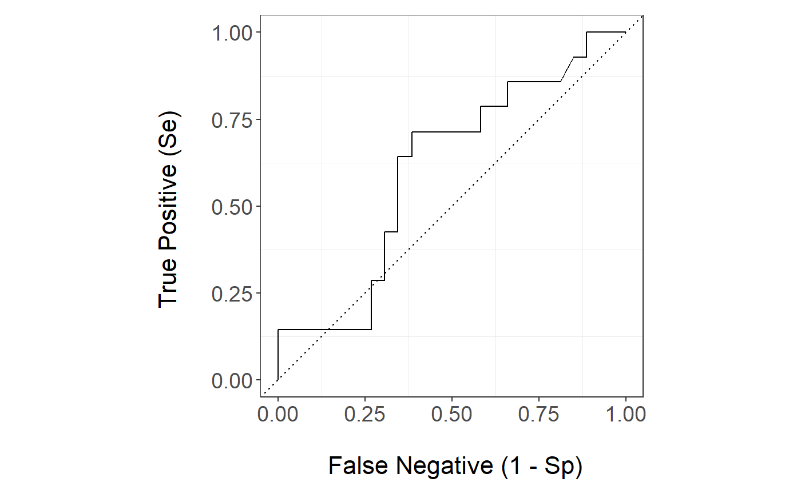

bone_Marrow_Transplant_Data.RmdWe apply the package ensBagg to a data set The Bone Marrow Transplant Data (bmt) which is in the package timereg . Bone marrow transplants are a standard treatment for acute leukemia. In the recovery process patients can suffer from Infections, toxicity, and (after allogeneic HSCT only), graft-vs.-host disease (GVHD) being the main causes of death. We are interested in predicting the time to death related to treatment where the risk of relapse is a competing risk.
We load the package ensBagg and timereg and we load the data set bmt
library(ensBagg)
#> Loading required package: Matrix
#> Loading required package: gam
#> Loading required package: splines
#> Loading required package: foreach
#> Loaded gam 1.16
library(timereg)
#> Loading required package: survival
bmt.data <- data(bmt)summary(bmt)
#> time cause platelet age
#> Min. : 0.030 Min. :0.0000 Min. :0.0000 Min. :-2.3493
#> 1st Qu.: 2.426 1st Qu.:0.0000 1st Qu.:0.0000 1st Qu.:-0.6336
#> Median : 7.862 Median :1.0000 Median :0.0000 Median : 0.2026
#> Mean : 22.237 Mean :0.8211 Mean :0.3137 Mean : 0.0000
#> 3rd Qu.: 35.806 3rd Qu.:1.0000 3rd Qu.:1.0000 3rd Qu.: 0.7875
#> Max. :110.625 Max. :2.0000 Max. :1.0000 Max. : 1.9396
#> tcell
#> Min. :0.0000
#> 1st Qu.:0.0000
#> Median :0.0000
#> Mean :0.1324
#> 3rd Qu.:0.0000
#> Max. :1.0000
dim(bmt)
#> [1] 408 5
train.set <- sample(1:nrow(bmt), floor(.9*nrow(bmt)), replace=FALSE)
test.set <- setdiff(1:nrow(bmt), train.set)
bmt.train <- data.frame(bmt[train.set,])
bmt.test <- data.frame(bmt[test.set,])
tao=7pred.bmt=ensBagg::ensBagg(train.data = bmt.train,test.data = bmt.test,xnam=names(bmt)[-(1:2)],tao=7,weighting ="CoxPH" ,folds =2 )The assessment of predictive performance using the IPCW AUC is:
pred.bmt$auc_ipcwBagg
#> LogisticReg GAM.3 GAM.4 LASSO Random Forest SVM
#> [1,] 0.5352199 0.5485066 0.5404781 0.5352199 0.5058694 0.5407401
#> BART k-NN Neural Network Ensemble
#> [1,] 0.5082281 0.4796174 0.5431381 0.5430997Now let s take a look at prediction of the algorithms that allows for weights natively:
head(pred.bmt$prediction_native_weights,5)
#> LogisticReg GAM.3 GAM.4 LASSO Random Forest
#> 1 0.5903804 0.5903804 0.5903804 0.5864611 0.4770342
#> 2 0.3822162 0.3822162 0.3822162 0.3813570 0.2581146
#> 3 0.3866296 0.3866296 0.3866296 0.3857011 0.2581146
#> 4 0.3041084 0.3041084 0.3041084 0.3044293 0.3217602
#> 5 0.1916993 0.1916993 0.1916993 0.1933223 0.2985863and their performance is:
pred.bmt$auc_native_weights
#> LogisticReg GAM.3 GAM.4 LASSO Random Forest
#> [1,] 0.5325476 0.5325476 0.5325476 0.5325476 0.5188321The prediction of the survival based methods
head(pred.bmt$prediction_survival,5)
#> CoxPH CoxBoost Random Forest
#> [1,] 0.5890603 0.5566096 0.5663913
#> [2,] 0.3759298 0.3663328 0.3827811
#> [3,] 0.3801276 0.3700313 0.3887389
#> [4,] 0.3032741 0.3021331 0.4824189
#> [5,] 0.2272210 0.2355466 0.2715417Lastly, we could see the performance of the algorithms if we were to discard the censored observations
pred.discard <- ensBagg::prediction_discard(train.data = bmt.train,test.data = bmt.test,xnam=names(bmt)[-(1:2)],tao=7)
#> Warning in model.matrix.default(mt, mf, contrasts): non-list contrasts
#> argument ignored
#> Warning in model.matrix.default(mt, mf, contrasts): non-list contrasts
#> argument ignored
head(pred.discard$prediction_discard)
#> LogisticReg GAM.3 GAM.4 LASSO Random Forest SVM
#> 1 0.5989595 0.58374036 0.59005978 0.5984162 0.48291438 0.3285268
#> 2 0.3909372 0.41520235 0.41569697 0.3908156 0.28281210 0.3285257
#> 3 0.3953806 0.41844828 0.41909886 0.3952492 0.28281210 0.3285257
#> 4 0.3120517 0.34658191 0.35362540 0.3120965 0.31555361 0.3285253
#> 5 0.2002696 0.22381641 0.22576030 0.2005023 0.32205758 0.2896893
#> 6 0.1478896 0.07788325 0.05990361 0.1481670 0.07493662 0.3285240
#> BART k-NN Neural Network
#> 1 0.59730580 0.60 0.5921091
#> 2 0.35376016 0.32 0.3969362
#> 3 0.36997944 0.32 0.4016511
#> 4 0.32099237 0.28 0.3126839
#> 5 0.24283393 0.24 0.1891284
#> 6 0.08394575 0.16 0.1591199
pred.discard$auc_discard
#> LogisticReg GAM.3 GAM.4 LASSO Random Forest
#> 0.5306667 0.5386667 0.5386667 0.5306667 0.5346667
#> SVM BART k-NN Neural Network
#> 0.4613333 0.5466667 0.4866667 0.5253333The ensemble ROC curve is
ensBagg::plot_roc(time=bmt.test$time,delta = bmt.test$cause,marker =pred.bmt$prediction_ensBagg[,"Ensemble"],wts=pred.bmt$wts_test,tao=7)
The Random Forest ROC curve is
ensBagg::plot_roc(time=bmt.test$time,delta = bmt.test$cause,marker =pred.bmt$prediction_ensBagg[,"Random Forest"],wts=pred.bmt$wts_test,tao=7)
The Random Forest survival ROC curve is
ensBagg::plot_roc(time=bmt.test$time,delta = bmt.test$cause,marker =pred.bmt$prediction_survival[,"Random Forest"],wts=pred.bmt$wts_test,tao=7)
The Random Forest natively weighted ROC curve is
ensBagg::plot_roc(time=bmt.test$time,delta = bmt.test$cause,marker =pred.bmt$prediction_native_weights[,"Random Forest"],wts=pred.bmt$wts_test,tao=7)
The Random Forest discarding censored observations
ensBagg::plot_roc(time=bmt.test$time,delta = bmt.test$cause,marker =pred.discard$prediction_discard[,"Random Forest"],tao=7,method = "discard")